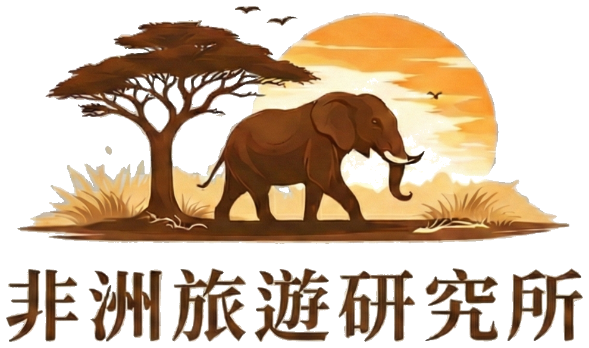
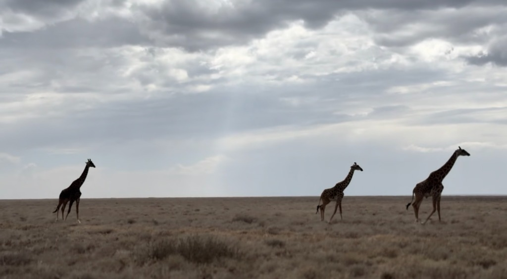
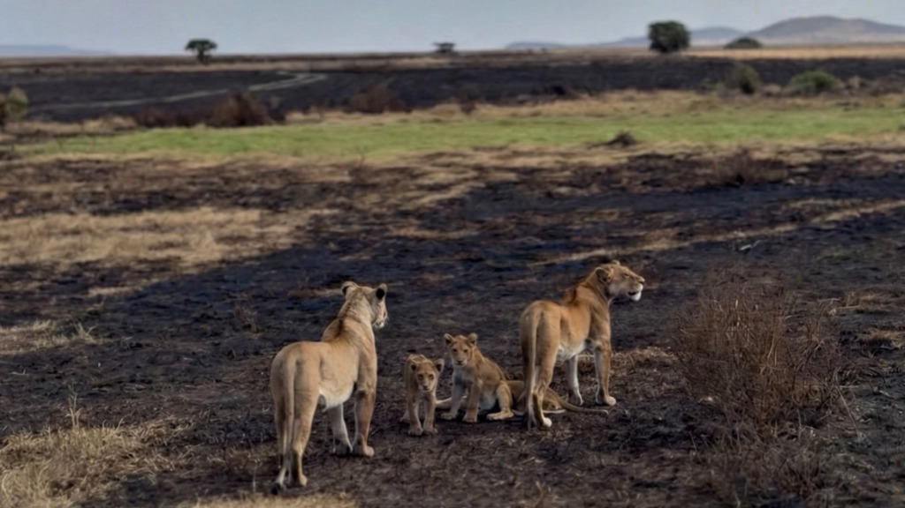
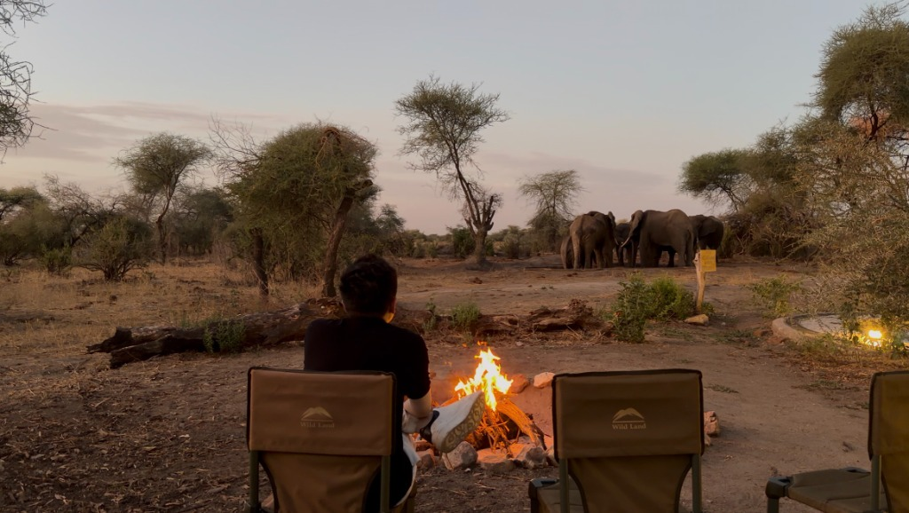

聯絡我們
歡迎透過以下方式與我們聯繫

掃描或點擊 QR Code
Line


我們走過這條路，也想為你指引方向。
從第一次對話到站上草原，讓每個決定都踏實、每個瞬間都值得。
別擔心，這些都是每個想去非洲的人會有的疑問
我要看動物大遷徙，應該去肯亞還是坦尚尼亞？
要待幾天、住哪裡、怎麼安排才順？
用「10 分鐘對話」先搞清楚你想要的：看動物、拍照、蜜月、親子，或只是想被大自然安靜地抱一下。
→ 你會有清楚的方向與屬於你的行程骨架。
去非洲是不是很貴？聽說要台幣二、三十萬？
市面上都是套裝行程，我都不知道錢花在哪裡？
用透明拆解，公開費用結構 (交通、住宿、門票、小費)，讓你看懂每一分錢。
→ 告訴你為什麼貴、也告訴你「哪裡能省」。教你挑選適合的方案，十幾萬就能很精彩！
非洲旅遊會不會很克難？沒水沒電、沒有Wi-Fi？
行程會不會很緊湊，沒有休息的時間？
我們擅長「留白」：該追動物時追、該休息時休息。
→ 我們會分享自己住過的寶藏住宿，你可以放鬆的享受非洲的寧靜與美好，也能透過社群媒體與家人朋友分享你的冒險。
行前要準備什麼東西？要打疫苗嗎？
網路上好多當地旅行社，到底哪一家比較好？我好怕遇到詐騙!
除了食衣住行，我們更在意「你會遇見誰」。
→ 我們會分享親自考察過的在地夥伴，他們同樣堅持將您的安全放在第一位。
我們透過 5 個步驟，協助您對接專業的當地資源，將對草原的期待變成真實的記憶。
透過 Line、Email 或 Instagram，告訴我們您的時間、預算與期待。我們會以過往經驗，為您分析適合的季節與路線建議供您參考。
根據您的需求，協助您向當地業者索取專屬路線規劃與詳細費用報價。我們將協助解說國家公園特色、住宿等級與交通差異，讓資訊更透明。
確認行程需求後，我們將協助您對接當地的合法旅行社，並由該旅行社直接為您執行住宿、車輛與機票的預訂服務。所有報價與合約皆由業者提供，資訊透明公開，讓您完全掌握。
分享完整的行前準備清單：包含簽證辦理教學、疫苗資訊整理、打包建議等。並提供當地旅行社的緊急聯絡窗口，確保您在當地有完善的支援。
當您站在塞倫蓋提的黃昏裡，會發現一切準備都是值得的！當地專業團隊將帶領您探索非洲，祝您帶著滿滿的回憶安全返家。

非洲旅遊研究所的成立，來自一個很簡單的信念：遠行不該只追求刺激，而應該被細心對待。
創辦人本身來自醫療背景，長期習慣在高風險環境中做決策。這也形塑了我們評估行程的標準——對細節保持高度敏感，對節奏有耐心，對品質近乎苛求。
我們不追求「看最多」，而是在對的時間停下來；不建議把旅程塞滿，而是留白，讓感受自然發生。
我們用醫療等級的嚴謹，為您篩選出一趟能安心享受的非洲旅程。
從細節、節奏到合規性，每一步都經過深思熟慮的檢視，只為讓你在很遠的地方，也能放鬆地走得很遠。
這不是行程表,而是草原上可能發生的片刻。
每個旅程的節奏都不同,這些只是我們想陪你慢慢走向的風景。

天還沒全亮,車子已經在草原上緩緩前行。與我們同行的，是遠方那群同樣早起的長頸鹿們。
有時候什麼也不會發生，但那種安靜本身，就值得你早起。

兩隻母獅帶著兩隻小獅子，就這樣靜靜站著，眺望著遠方。 這一瞬間，草原上沒有狩獵、沒有奔跑，只有一家人靜靜相依。 你會明白，原來最動人的，不是獵殺的瞬間，而是這樣平凡的日常。

坐在營地的椅子上，篝火在眼前輕輕跳躍，你以為這就是黃昏的全部。 直到一群大象，從樹林間緩步走來，就在不遠處停下，好像只是路過打個招呼。 那一刻你才明白，這裡的日落，從來不需要刻意安排。
「他們真的把每個細節想得很清楚，也願意花時間解釋「為什麼這樣安排」。旅程中沒有需要我擔心的時刻，這就是最大的價值。」 — 吳先生 (桃園市/蜜月旅行)
「有些畫面，我到現在還會想起來。清晨的霧、車窗外的風聲、還有那幾隻樹下乘涼的獅子。這趟旅程沒有被塞滿，卻讓人感覺很完整。」 — 許先生 (高雄市/家庭旅遊)
「老實說，出發前我真的很緊張。謝謝非洲旅遊研究所，他們帶著我，把未知變成可以理解的事情。到了當地，我只需要好好看風景，其他都有人照顧好。
如果是第一次去非洲，我會很推薦這樣的方式。」 — Janice (南投縣/第一次非洲旅遊)
「我們不是一直在追動物。很多時候只是停著，看牠們發呆、走過、消失。那種節奏，反而讓我拍到很多自己很喜歡的畫面。
如果你喜歡攝影，這樣的旅程會很適合你。」 — 財哥 (台中市/攝影愛好者)
「分手後，我來到了這裡。不是為了忘記誰，而是想在很大的世界裡，慢慢把自己找回來。
這趟旅程，讓我重新把注意力放回到自己身上。」 — Alice (新北市/單獨旅遊)
「一開始我其實很猶豫要不要帶孩子來。後來整個旅程的節奏讓我很安心。沒有一直趕路，也不需要孩子硬撐。
我印象最深的是某個傍晚，兒子突然指著遠方說：「牠們在回家」。那一刻，我真的很慶幸，慶幸能和他一起看到生命該有的樣子。」 — 龔先生 (台北市/給兒子的畢業旅行)
Safari 不是打卡景點的集合，而是需要時間沉澱的體驗。 我們不追求倉促定案，而是花時間理解每位旅客的期待。 我們拒絕推薦罐頭行程，因為每個人想在草原上遇見的，都不一樣。 這是一條比較慢的路，但唯有這樣， 才能在你站上草原時，確定這就是你真正想要的旅程。
歡迎透過以下方式與我們聯繫
掃描或點擊 QR Code
Line